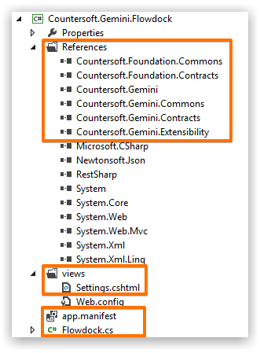
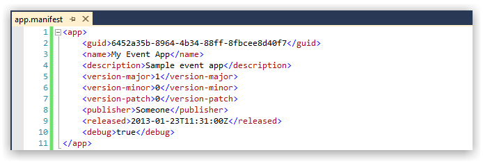
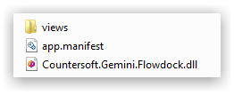
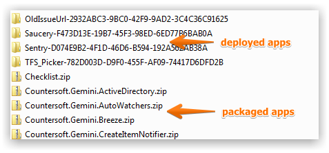

Th Apps Framework enables anyone to build apps that extend or bring new functionality to Gemini.
Underlying the Apps Framework is built on Microsoft .NET technology.
The Countersoft GitHub repository contains sample applications that are built using the Apps Framework.
This documentation references those samples.
Every app has the following common elements.

The Gemini assemblies that compose the Apps Framework must be referenced.
The views folder consists of Razor views - the user interface for your app if applicable.
The app.manifest file describes your app.
The manifest file describes your app and is used during deployment.

| Option | Description |
|---|---|
| GUID | Globally unique identifer (GUID) for your app |
| Name | Application title displayed in Screen setup for Administrators to identify your app |
| Description | Brief description of the application |
| Version Major | Semantic versioning for your app |
| Version Minor | |
| Version Patch | |
| Publisher | Name of the organization/individual who owns the app |
| Released | Date the app was released |
| Debug | Can be true or false. When true app is not cached and can be changed on disk (useful during development) |
Every app is ZIPPED with the following folder structure.

The views folder consists of Razor views - the user interface for your app if applicable.
The app.manifest file describes your app.
The dll file represents the compiled code for the app.
Apps are deployed to the App_data/Apps folder which is located where you installed Gemini on your web server.

The packaged apps represent ZIP files which are then extracted and deployed for use.